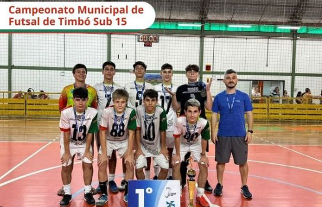
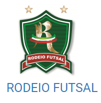
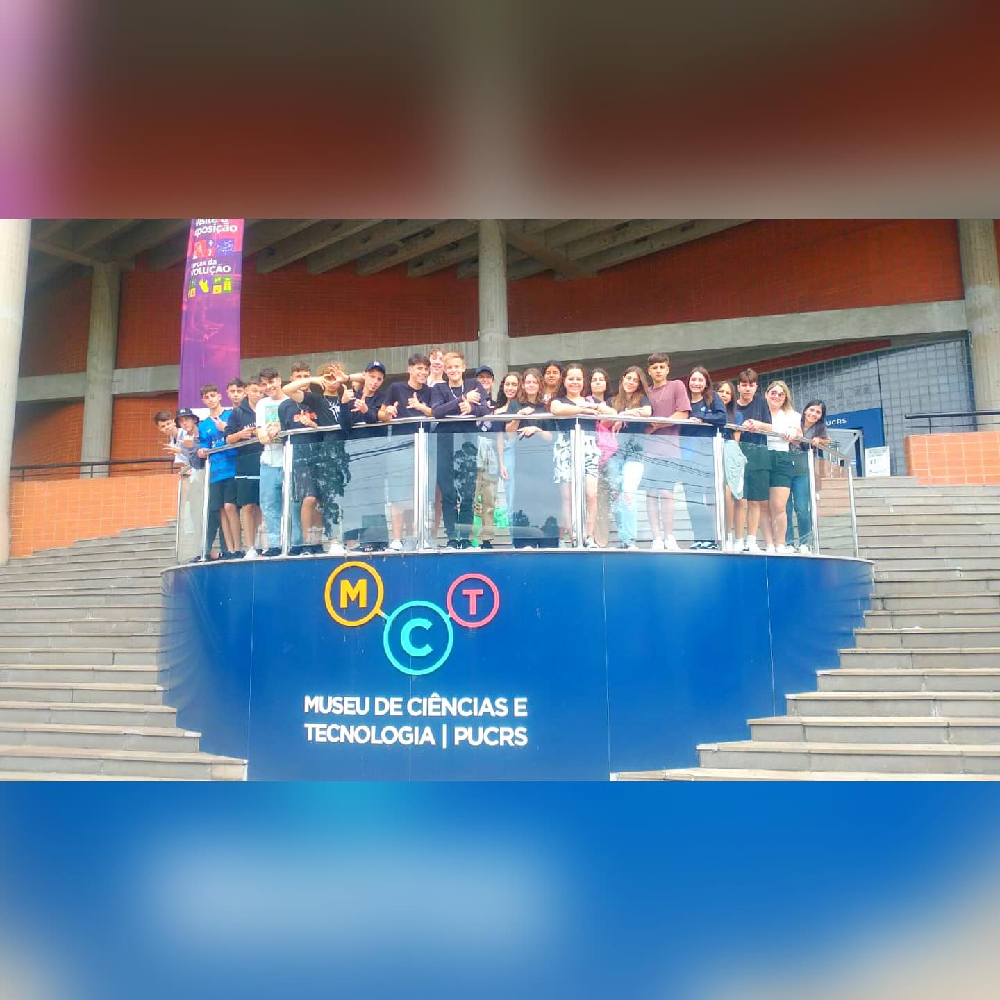

Meu Memorial ⚽

- Meu nome é Enzo Enrico Ferrari
- Atualmente tenho 15 anos
- Moro em Timbó/SC
- Nome do meu pai: Adelcio Ferrari
- Nome da minha mãe: Alessandra Fabiana Janke
- Nome da minhas irmãs:Paolla Justine Ferrari e Valentina Louise Ferrari
Hobbies:
- Jogar Futebol
- Jogar no Pc
- Sair com os amigos
Localização:
Dados:
- Rua Alasca
- Bairro Nações
- Número 486
- Timbó/SC
- Ponto de referencia: Mercado Felippi
Futsal:

Curiosidades:
- Sou Jogador de futsal a 10 anos
- Sou bi campeão do Municipais: Timbó, Indaial, Ascurra e Apiúna
- Fui Artilheiro do Municipal de Indaial
- Ganhei a camia do Jaraguá no ultimo jogo do Falcão
Carreira:

Experiencias:
- Fui na creche Primeiros Passos
- Completei o Jardim de Infancia no Primavera
- Formado no Ensino Fundamental pela Escola de Ensino Fundamental Professor Emir Ropelato
- Cursando o Ensino Médio pelo Ruy Barbosa
Ideias de Carreiras Futuras:
- Trabalhar como Professor de Educação Física
- Ser Técnico de algum time
- Trabalhar em alguma área que envolva Esportes
Links de parceiros:
Dilera
Bork
Tavin
Cattoni
Amohr
Russelé
PIFS
Site desenvolvido por Enzo Enrico Ferrari ©